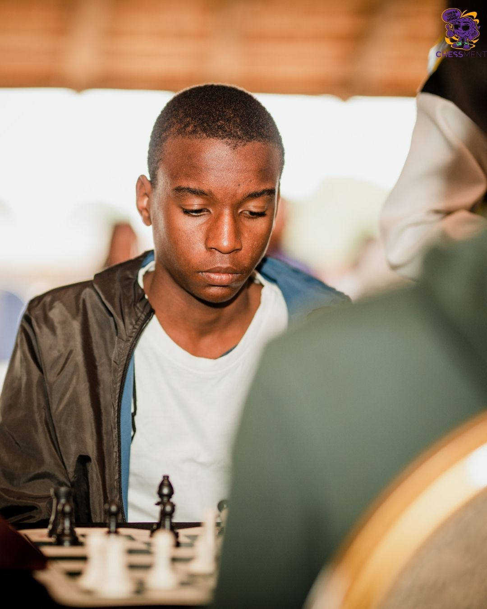
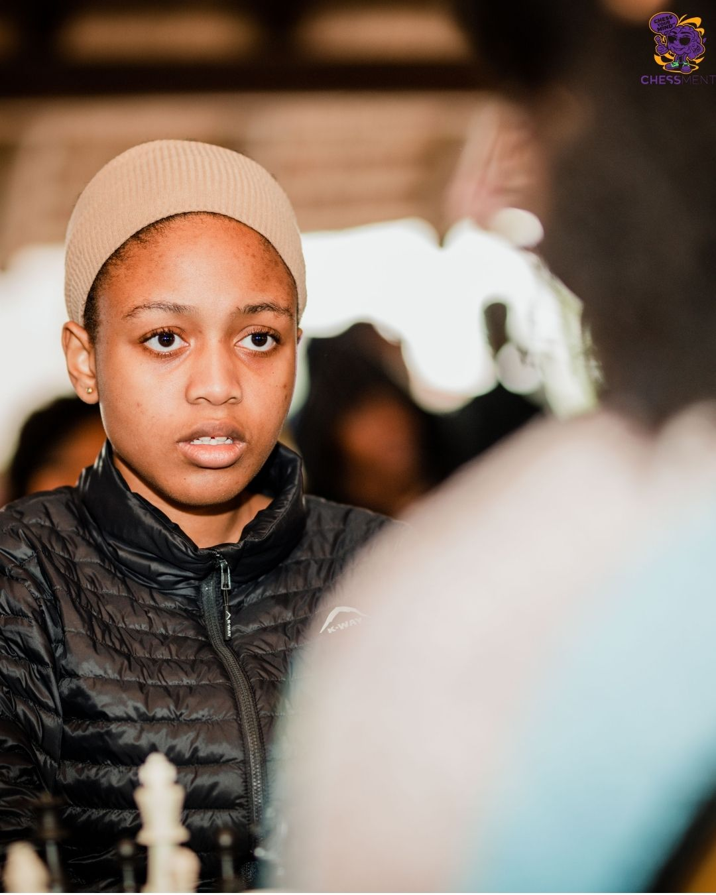

Momentos do OPEN CHESSMENT SECOND PAWN ♟️
Um registo das actividades e dos encontros da comunidade ChessMent.
Assistir directamente no YouTubeMomentos ChessMent
Recordações de partidas, encontros e momentos partilhados à volta do tabuleiro.


Veja partidas, ideias e conteúdos da comunidade.
Um registo das actividades e dos encontros da comunidade ChessMent.
Assistir directamente no YouTube